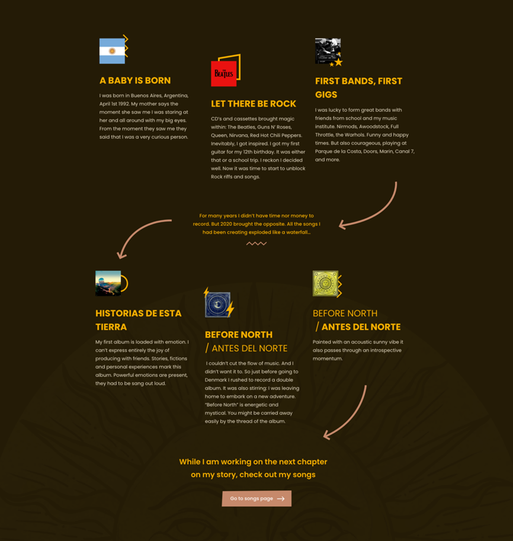
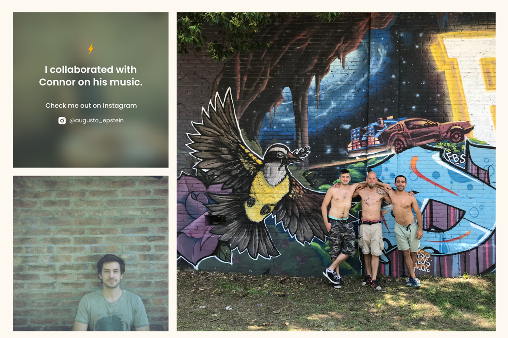
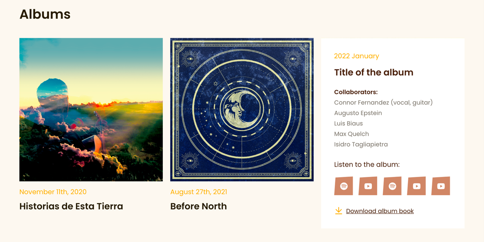
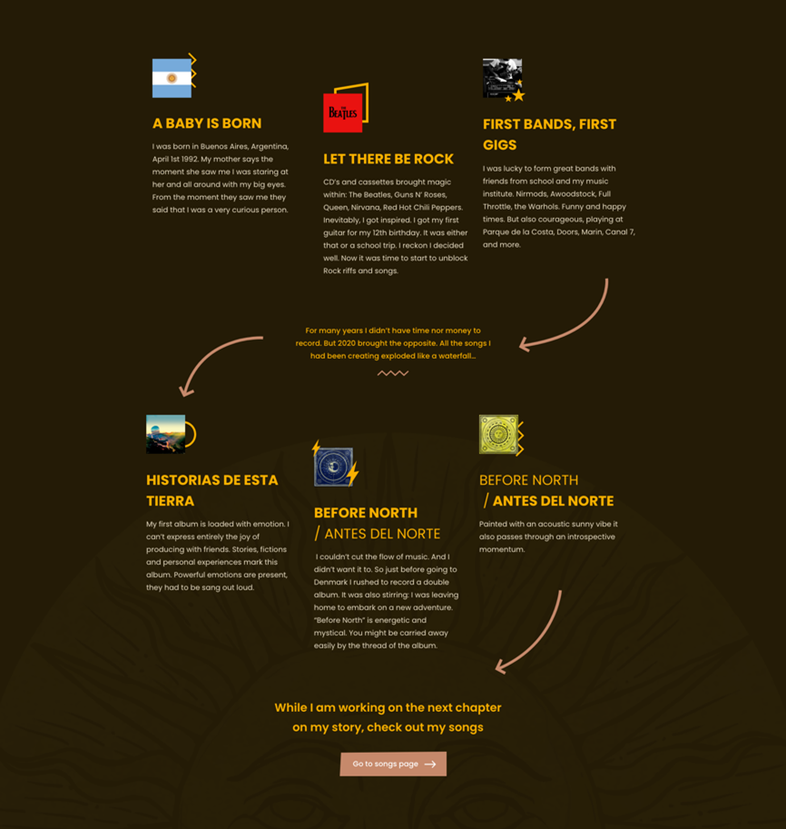
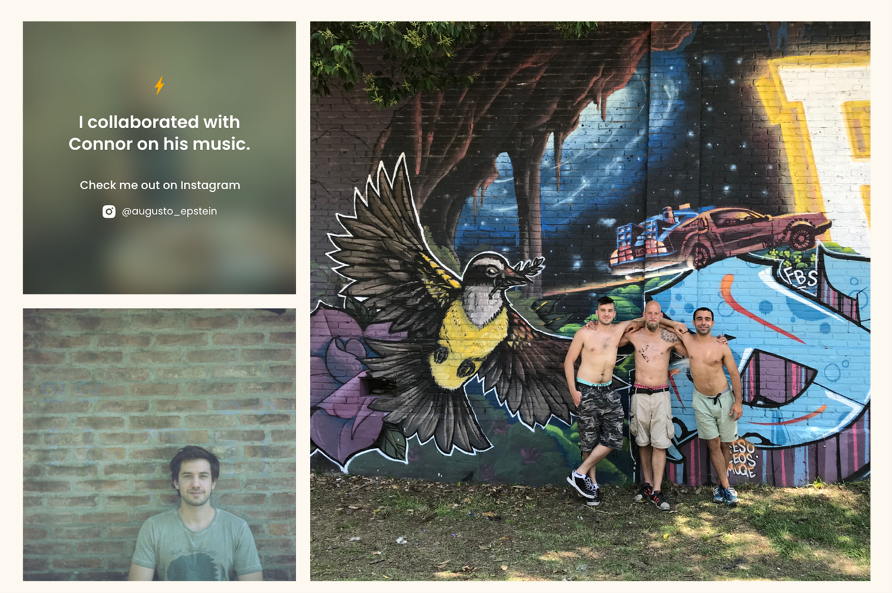
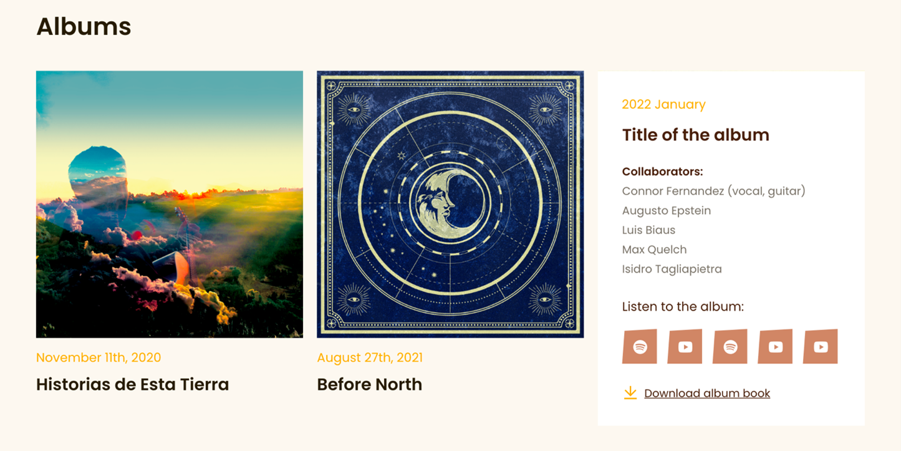

connor fernandez
Year:
2022
Tasks:
Research, Design, Coding
Tech:
AdobeXD, HTML, CSS, JavaScript
GITHUB REPOSITORY
Crafting Connor Fernandez's musician portfolio was a journey marked by attention to detail and creative innovation. Here's how we brought his vision to life:
Unraveling his story - We went on a deep dive into Connor's life and artistic journey. Through client meeting, we uncovered the milestones that shaped him, binding them into an engaging infographic.
Celebrating collaborations - Connor's journey was not solitary; it was enriched by collaborations with fellow artists. To share these partnerships, we created a dynamic gallery showcasing the talents he had worked with. With each hover, visitors can discover more about the artists behind the music, fostering a sense of community within Connor's portfolio.
Diving into musical depths - Recognizing the importance of his poetic expressions, we provided album book PDFs for each release. This allows visitors to deepen their connection with his art.
 




